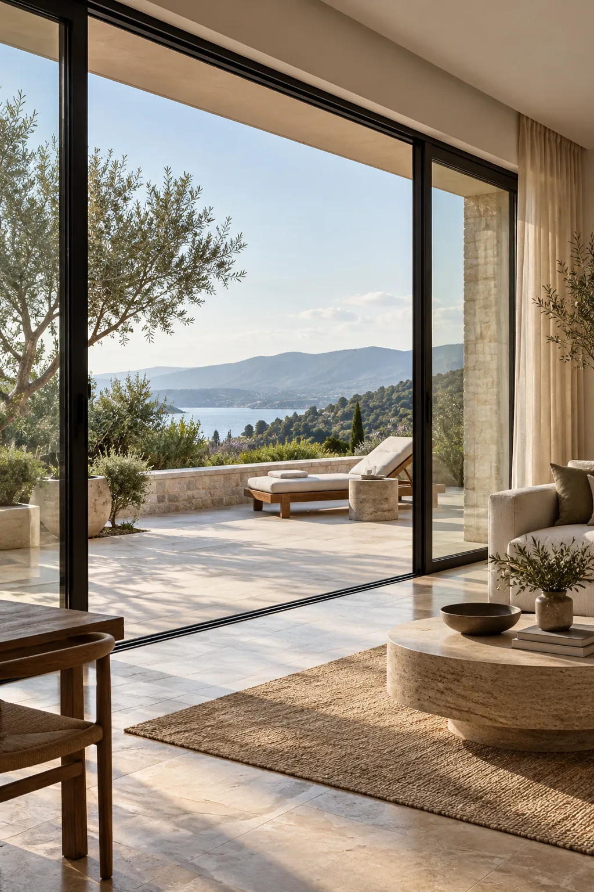
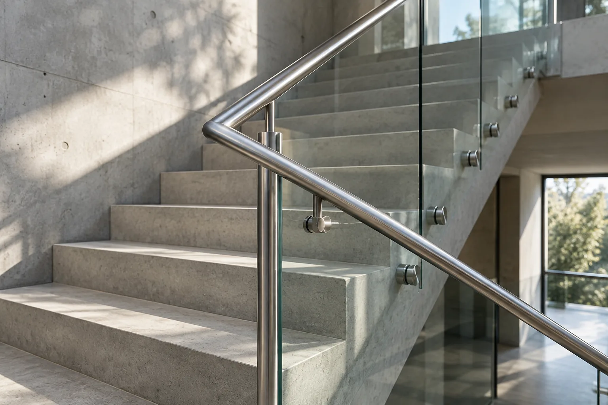
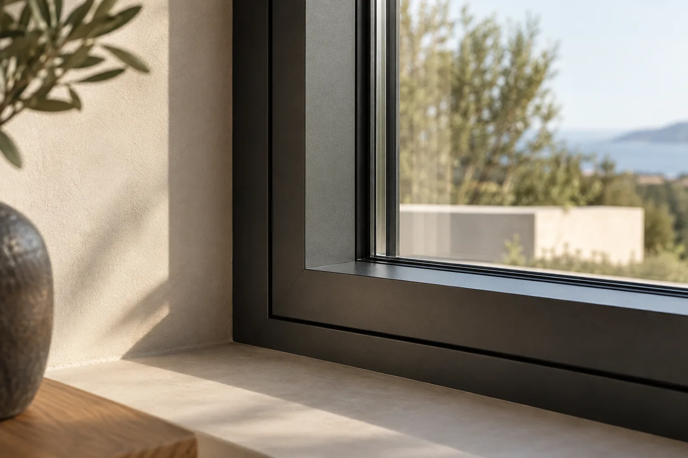

Aluminio
Líneas limpias y versatilidad para espacios contemporáneos.
Fabricación a medida para espacios que importan.
Fabricamos soluciones a medida para hogares, comercios y proyectos en Villavicencio.
Envíanos fotos y medidas por WhatsApp.
Calidad que se nota en cada detalle.
Puertas, ventanas, vidrio templado y barandas pensados para integrarse a la arquitectura de tu hogar o negocio.
Cuéntanos qué necesitasDel primer trazo al acabado final, cada elemento tiene un lugar en el espacio.

Soluciones en aluminio y vidrio para espacios residenciales y comerciales.
Diseños funcionales que integran luz, ventilación y arquitectura.
Aplicaciones contemporáneas para interiores y exteriores.
Acero y vidrio integrados a escaleras, balcones y espacios abiertos.
Elementos a medida con atención a la forma y al acabado.
Cada proyecto reúne materiales, medidas, diseño y ejecución en una solución pensada alrededor del lugar.
Ideas visuales para imaginar lo que el aluminio, el vidrio y el acero pueden hacer en tu proyecto.


Imágenes conceptuales de referencia. No corresponden a proyectos realizados por CONSTRULEV.
La elección correcta cambia cómo se ve y se vive un espacio.
Líneas limpias y versatilidad para espacios contemporáneos.
Transparencia y amplitud para conectar ambientes.
Presencia y carácter para elementos arquitectónicos.
Un buen resultado empieza en lo que a veces pasa desapercibido.
Una conversación clara para entender tu espacio y definir lo que necesita.
Escríbenos y comparte fotos, medidas o una referencia.
Revisamos lo que necesitas y las características del espacio.
Preparamos los elementos necesarios para el proyecto.
Llevamos la solución hasta el espacio.
No necesitas tener todo definido. Una foto y unas medidas aproximadas son un buen comienzo.
Enviar fotos por WhatsApp27 reseñas en Google
Destaca la transformación de aluminio, vidrio y acero inoxidable en productos para el hogar, así como la variedad de diseños y acabados.
TuxstoneResalta la calidad de los productos y recomienda a la empresa.
Diana Eyesmit Liberato PerezCuéntanos tu idea y envíanos fotos o medidas de tu espacio. Hablemos directamente por WhatsApp.
Cotizar por WhatsApp